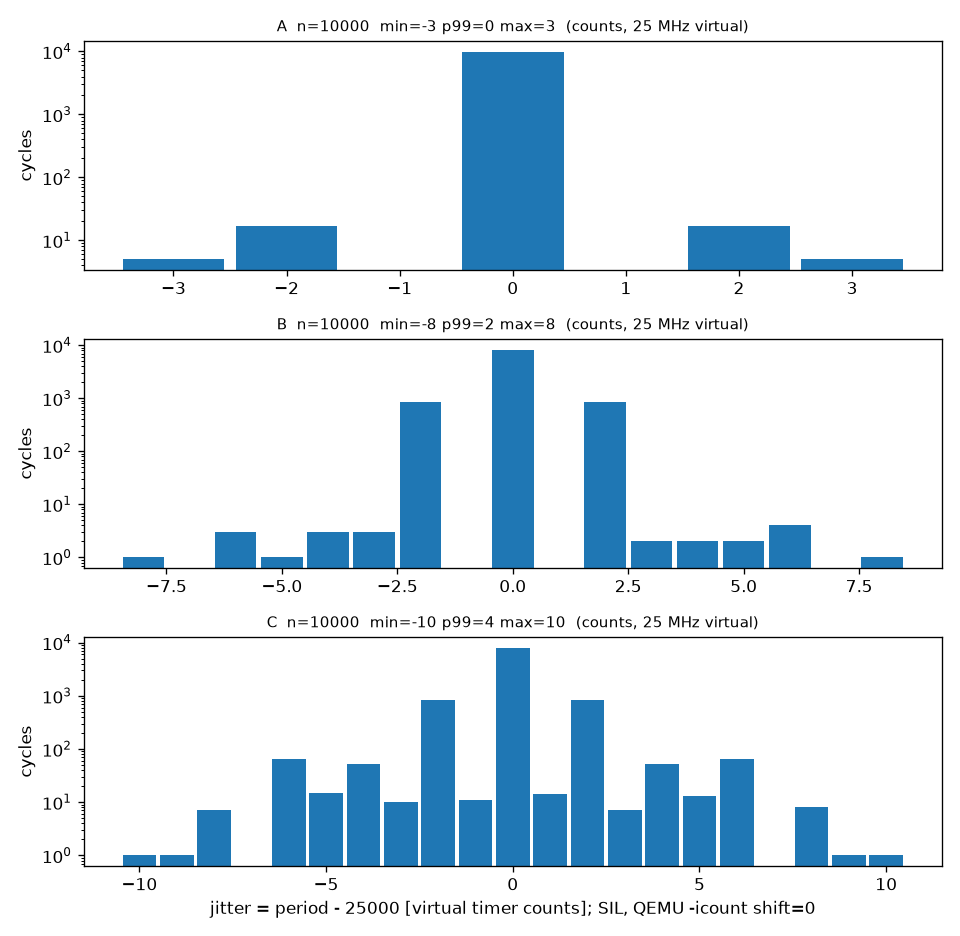

Phần 7 — Đo jitter control task
Đo jitter và chi phí bước điều khiển bằng bộ đếm TIMER0 25 MHz trong 3 điều kiện tải mạng, xuất histogram và số liệu thô.
Đo 10 000 chu kỳ control cho 3 điều kiện tải mạng bằng bộ đếm 25 MHz (CMSDK TIMER0). Jitter (chu kỳ − 25 000 count) nằm trong ±3 / ±8 / ±10 count (A: không tải / B: echo ≈ 88 Hz ảo + probe 100 Hz / C: echo ≈ 1 013 Hz ảo + probe), 0 chu kỳ trễ ≥ 1 tick ở cả ba. Chi phí controller (encoder + ước lượng tốc độ + cascade) ≈ 2,6 nghìn lệnh (65,6 count); với plant mô hình trên node thì ≈ 14 nghìn lệnh. Histogram và số liệu thô nằm trong docs/results/.
1. Mục tiêu và cách làm
Mục tiêu (plan M1 Phần 7, REQ-PERF-002): định lượng độ ổn định chu kỳ của control task và chi phí một bước điều khiển; xuất histogram. Tiêu chí (plan): (1) histogram + p99/max cho 3 điều kiện; (2) tất định: 0 chu kỳ trễ ≥ 1 tick trong 10 000 chu kỳ ở điều kiện B; (3) chi phí một bước control < 30 % của 25 000 cycle (ngưỡng đề xuất — nếu vượt thì ghi lại và xét Q15); (4) nhãn "SIL, QEMU, thời gian ảo".
- Chọn nguồn thời gian đọc được từ task không đặc quyền.
- Trong vòng control, đọc bộ đếm ở 3 điểm: đầu chu kỳ, sau controller, sau plant; lưu 10 000 mẫu
uint16vào vùng dữ liệu control. - Khi đủ mẫu, task thấp in một khối
JITTER_BEGIN … J,i,period,ctrl,plant … JITTER_ENDqua UART. tools/metrics.py jitterđọc log, tính min/mean/p50/p99/max/σ, vẽ histogram, ghi CSV.- Chạy ba điều kiện; hiệu chuẩn tốc độ gửi để đạt tải mong muốn theo thời gian ảo.
2. Kiến thức 1 — Jitter là gì
Jitter = độ lệch của thời điểm bắt đầu chu kỳ so với lý tưởng. Với chu kỳ lý tưởng \(T=25\,000\) count (1 ms @ 25 MHz) và thời điểm bắt đầu \(s_k\):
Đây là jitter chu kỳ-sang-chu kỳ (period jitter): dễ đo, không cần biết pha tuyệt đối. Nguồn jitter trong RTOS: độ trễ ngắt tick, đoạn mã tắt ngắt (critical section) của task/ISR khác, thời gian chuyển ngữ cảnh, tranh chấp bus. Nhìn từ vòng điều khiển, jitter làm \(\Delta t\) thật khác \(\Delta t\) danh định đã dùng trong PID.
Hai khái niệm khác nhau: jitter (dao động của thời điểm bắt đầu) và trễ chu kỳ / deadline miss (thân vòng lặp chạy quá lâu hoặc bị chiếm quyền nên lỡ cả một tick). Tiêu chí tất định (2) thuộc loại sau và được đếm trực tiếp bằng giá trị trả về của xTaskDelayUntil.
3. Kiến thức 2 — Đo thời gian trong QEMU
| Nguồn | Có trong QEMU 8.2.2 mps2-an385? | Đọc được từ task Restricted? |
|---|---|---|
DWT CYCCNT | Không (đã xác minh ở M0: CYCCNT luôn 0) | — |
SysTick VAL (plan ghi là phương án dự phòng) | Có | Không: nằm ở vùng PPB 0xE000E018; truy cập từ không đặc quyền bị fault, MPU không cấp quyền được cho vùng này |
CMSDK APB TIMER0 (0x40000000) | Có, đếm theo SYSCLK 25 MHz | Có: là ngoại vi thường, cấp bằng 1 vùng MPU chỉ-đọc 32 B |
Quyết định: dùng TIMER0 làm bộ đếm tự do 32 bit đếm xuống (RELOAD = 0xFFFFFFFF, CTRL = 1, không ngắt). Ưu điểm so với SysTick: không bị reload mỗi tick nên không có rủi ro đọc rách cặp (tick, VAL) như plan lo ngại, và thời gian giữa hai lần đọc chỉ là một phép trừ 32 bit:
(đếm xuống nên lấy giá trị trước trừ giá trị sau; phép trừ uint32_t tự xử lý tràn). Kết quả cất vào uint16_t (tối đa 65 535 count ≈ 2,6 ms) — đủ vì chu kỳ ≈ 25 000.
m1_plan.md/REQ-PERF-002 — chỉ nêu ở đây và trong sil_environment.md.4. Kiến thức 3 — Đổi count ↔ lệnh ↔ cycle
Dưới -icount shift=N, QEMU coi mỗi lệnh guest mất \(2^N\) ns ảo. Còn TIMER0 đếm theo thời gian ảo ở 25 MHz, tức 1 count = 40 ns ảo. Vì thế:
-icount | 1 lệnh = | 1 count TIMER0 = | Chi phí controller đo được | → số lệnh |
|---|---|---|---|---|
shift=0 | 1 ns | 40 lệnh | 65,6 count | ≈ 2 624 |
shift=5 | 32 ns | 1,25 lệnh | 2 087 count | ≈ 2 609 |
Hai cấu hình cho cùng số lệnh (≈ 2,6 nghìn) — đây là kiểm tra chéo cho phép quy đổi. Lưu ý quan trọng: ở shift=0 máy ảo "chạy" như 1 GHz so với đồng hồ 25 MHz, nên chi phí tính bằng count trông nhỏ (2 % chu kỳ) một cách đánh lừa; con số trung thực là số lệnh, rồi nhân CPI của lõi thật. QEMU không mô hình hóa pipeline/wait-state nên không biết CPI thật của Cortex-M3.
5. Kiến thức 4 — Percentile và histogram
- p99 (nearest-rank): giá trị mà 99 % mẫu không vượt quá — mô tả "đuôi" phân bố mà trung bình che mất. max là trường hợp xấu nhất trong 10 000 mẫu (không phải trong mọi trường hợp có thể).
- Histogram ở đây dùng thang log trên trục tần suất vì phần lớn mẫu nằm đúng ở 0 và các "đuôi" chỉ vài mẫu.
- Jitter đo dưới
-icountlà jitter do phần mềm gây ra (ngắt, critical section, chuyển ngữ cảnh), không chứa nhiễu của host — đó là lý do kết quả tái lập được (σ dưới 1 %, so với tới 25 % khi không dùng-icount— đã ghi ở M0).
6. Code đã viết
6.1 Thu mẫu trong control task
if( c->ulTick >= JITTER_SKIP_TICKS && c->ulJitterN < JITTER_SAMPLES )
{
if( c->ulJitterN == 0 ) { c->ulJitterMissedBase = c->ulMissedDeadlines; }
c->usPeriod[ c->ulJitterN ] = ( uint16_t ) ( c->ulPrevStart - ulT0 ); /* wrap-safe */
c->usCostCtrl[ c->ulJitterN ] = ( uint16_t ) ( ulT0 - ulT1 );
c->usCostPlant[ c->ulJitterN ] = ( uint16_t ) ( ulT1 - ulT2 );
c->ulJitterN++;
if( c->ulJitterN == JITTER_SAMPLES )
{
c->ulJitterMissedEnd = c->ulMissedDeadlines;
c->ulJitterDone = 1;
}
}
c->ulPrevStart = ulT0;freertos/app/control_task.c
Ba lần đọc TIMER0_VALUE: ulT0 (đầu chu kỳ, ngay sau khi xTaskDelayUntil trả về), ulT1 (sau encoder + ước lượng + cascade), ulT2 (sau plant). Bỏ 500 tick đầu (JITTER_SKIP_TICKS) để loại nhiễu lúc khởi động mạng. Chỉ ghi vào mảng trong vùng dữ liệu của chính task — không gọi OS.
6.2 Vùng MPU cho bộ đếm (chỉ đọc)
{ ( void * ) TIMER0_BASE, 32, portMPU_REGION_READ_ONLY | portMPU_REGION_EXECUTE_NEVER },freertos/app/control_task.c
6.3 Công cụ phân tích tools/metrics.py
def percentile(sorted_vals, q):
"""Nearest-rank percentile, q in [0,100]."""
if not sorted_vals:
raise ValueError("empty")
k = max(0, min(len(sorted_vals) - 1, int(-(-q / 100.0 * len(sorted_vals) // 1)) - 1))
return sorted_vals[k]tools/metrics.py
def jitter_summary(d):
"""Jitter = period - ideal, in virtual timer counts (1 count = 40 ns virtual)."""
jit = [p - d["ideal"] for p in d["period"]]
late = sum(1 for p in d["period"] if p >= 2 * d["ideal"] - d["ideal"] // 2) # >= ~1.5 ticks: a tick was lost
return {"jitter": stats(jit), "ctrl": stats(d["ctrl"]), "plant": stats(d["plant"]),
"missed_in_window": d["missed"], "late_cycles": late, "n": len(jit)}tools/metrics.py
Test: tools/tests/test_metrics_jitter.py (phân tích log mẫu, phát hiện chu kỳ 50 000 count là "trễ", percentile nearest-rank).
6.4 Lệnh chạy
M1 Part 7 jitter (SIL, QEMU -icount shift=0, virtual time; 1 count = 40 ns virtual)docs/results/m1_jitter_summary.txt
- Build đo:
-DCONTROL_LOG_CSV=OFF(UART 1 kHz làm chậm mô phỏng và gây nhiễu), A thêm-DNODE_PROBE_ENABLE=OFF. python tools/metrics.py jitter A=logA.txt B=logB.txt C=logC.txt --out docs/results/m1_jitter.
7. Ba điều kiện đo
| ĐK | Tải | Cách tạo | Tải đo được (node tự đếm, thời gian ảo) |
|---|---|---|---|
| A | Không tải mạng | Build tắt udp_probe, host không gửi | 0 |
| B | "udp_echo 100 Hz" | udp_probe node→peer 100 Hz (ảo) + host gửi echo 21 Hz thật | echo ≈ 88 gói/s ảo (+ probe 100 Hz) |
| C | Tải cao "1 kHz" | như B nhưng host gửi 250 Hz thật | echo ≈ 1 013 gói/s ảo |
-icount, thời gian ảo chạy chậm hơn thời gian thật khi CPU guest bận (mạng làm tăng độ bận). Host gửi 100 Hz thật sẽ thành ~460 Hz ảo. Tôi đã chạy thử, đo tải bằng bộ đếm udp_echo rx của node mỗi 5 s ảo, rồi chỉnh tốc độ gửi. Kết quả B ≈ 88 Hz (hơi dưới 100) và C ≈ 1 013 Hz. Số này là đếm của node, không phải tốc độ gửi của host.8. Kết quả
10 000 chu kỳ mỗi điều kiện, -icount shift=0. Đơn vị: count TIMER0 (1 count = 40 ns ảo); jitter = chu kỳ − 25 000.
| ĐK | min | mean | p50 | p99 | max | σ | trễ ≥ 1 tick |
|---|---|---|---|---|---|---|---|
| A | −3 | 0,00 | 0 | 0 | 3 | 0,15 | 0 |
| B | −8 | 0,00 | 0 | 2 | 8 | 0,86 | 0 |
| C | −10 | 0,00 | 0 | 4 | 10 | 1,23 | 0 |
A, shift=5 | −120 | 0,00 | 0 | 0 | 80 | 3,39 | 0 |

Đọc kết quả:
- Tải mạng làm σ tăng (0,15 → 0,86 → 1,23 count) và mở rộng đuôi (±3 → ±8 → ±10), nhưng tuyệt đối vẫn rất nhỏ: ±10 count = ±400 ns ảo, tức ±0,04 % chu kỳ. Nghĩa là trong mô hình này tranh chấp từ IP task /
udp_echogần như không làm lệch thời điểm bắt đầu của control task (ưu tiên 9 cao nhất). - Giá trị trung bình đúng 0 là hệ quả của tick ảo chính xác: tổng các độ lệch bị triệt tiêu.
- Ở
shift=5đuôi rộng hơn (−120/+80 count) vì mỗi lệnh "đắt" hơn 32 lần: cùng một đoạn mã tắt ngắt dài bằng số lệnh nhưng chiếm nhiều count hơn. Đáng chú ý, vẫn 0 chu kỳ trễ. - Tiêu chí (2) (0 chu kỳ trễ ≥ 1 tick trong 10 000 chu kỳ ở B): đạt, cả hai cách đếm —
missed_in_window=0(giá trị trả về củaxTaskDelayUntil) và 0 chu kỳ có độ dài ≥ 1,5 tick.
9. Chi phí một bước control
| Thành phần | count (mean / p99 / max) | Số lệnh ≈ | % của 25 000 (giả sử CPI = 1) |
|---|---|---|---|
| Controller: encoder + ước lượng tốc độ + cascade | 65,6 / 88 / 93 | 2 624 / 3 520 / 3 720 | 10,5 % (p99: 14 %) |
| Plant (mô hình trên node, 10 bước con Euler) | 285,4 / 289 / 290 | 11 415 | 45,7 % |
| Cộng cả hai | 351 | ≈ 14 040 | 56 % |
Đối chiếu tiêu chí (3) "< 30 % của 25 000 cycle":
- Controller riêng: 2,6 nghìn lệnh = 10,5 % nếu CPI = 1; vượt 30 % chỉ khi CPI ≳ 2,9. Với số học float mềm (nhiều lệnh nhảy/nhớ), CPI thật của Cortex-M3 có thể cao hơn 1 — không thể xác nhận bằng QEMU. Kết luận chấp nhận được cho mục đích SIL, kèm giả thiết CPI.
- Cả bước gồm plant: 56 % ở CPI = 1 → vượt ngưỡng 30 %. Plant trên node chỉ là đồ giả lập (trong hệ thật là motor); nhưng vì nó chạy cùng task nên làm kín ngân sách tick. Cách giảm nếu cần: giảm số bước con của plant (hiện 10), đổi sang Q15 cho plant, hoặc đẩy plant sang task riêng.
- Giả định "float mềm đủ ở 1 kHz" của Phần 1: đúng cho controller, hẹp cho controller + plant.
10. Giới hạn và cách đọc đúng
- Chỉ là SIL, thời gian ảo. Không phải phần cứng, không phải hard real-time; không suy ra jitter của chip thật.
- Dưới
-icount, "độ trễ ngắt" được mô hình hóa theo số lệnh — tốt cho so sánh tương đối giữa các điều kiện, không đại diện cho đường bus/wait-state thật. - Mô phỏng NIC LAN9118 không có DMA thật; tải mạng có thể nhẹ hơn trên phần cứng.
- Tải B nhận ≈ 88 Hz thay vì đúng 100 Hz; C ≈ 1 013 Hz. Chưa chạy lặp nhiều lần để khảo sát phương sai giữa các lượt.
- Plant và controller đo chung một bộ đếm: chi phí gồm cả thời gian ngắt chen ngang trong khoảng đó (hiển thị ở đuôi max).
11. Tự kiểm tra
- Vì sao task Restricted không đọc được SysTick, và TIMER0 giải quyết thế nào?
- Jitter khác "trễ chu kỳ" ở điểm nào? Mỗi cái đo bằng gì?
- Vì sao cùng chi phí controller lại là 65,6 count ở
shift=0nhưng 2 087 count ởshift=5? Con số nào "thật" hơn? - Vì sao p99 và max hữu ích hơn mean khi đánh giá jitter?
- Kết luận "controller < 30 %" cần giả thiết gì và vì sao không kiểm chứng được bằng QEMU?